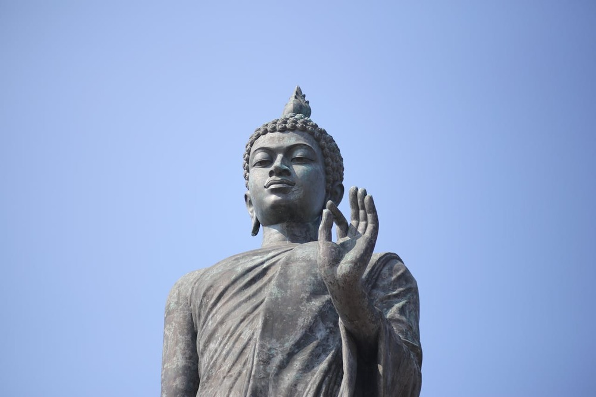
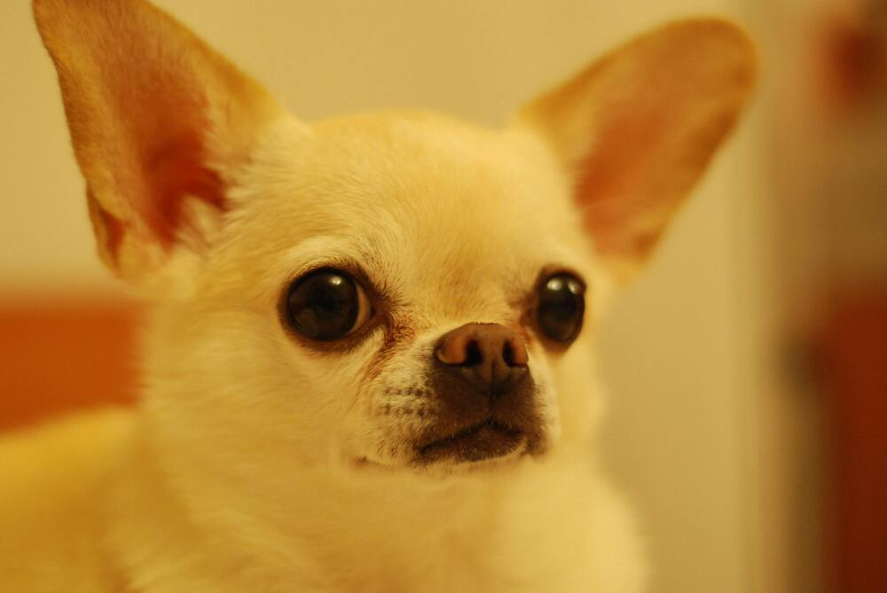
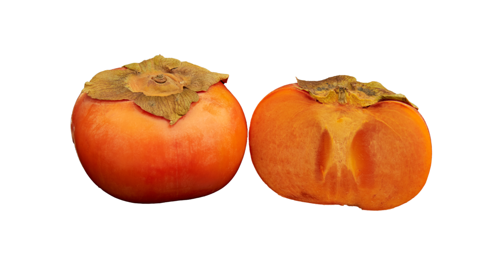

과장 없이 살면서 백번은 넘게 들어본 말이다. 이름을 한번에 알아듣는 사람은 잘 없는 편이다. 한번에 알아들어주면 그 사람은 좋은 사람
꽤 오래된 통계긴 하지만 2015년도 기준 전국에 6,024명.
생각보다 많다 싶을 수 있다.
어느정도 수치인지 감이 안온다면 살면서 감씨를 본 경험이 있는지 되짚어보면 느낌이 올 것이다.
일단 난 없다.
감씨를 본 적 있다는 사람도 만난 적이 없다.
전국에 만명도 안되는 성씨로 살면
어떤 일들을 겪는가하면,

나는 늘 1번이었다.
어딜가나 늘, 초중고에 이어 대학교까지
매도 먼저 맞는게 낫다는 말이 있긴하다지만
나은지는 여전히 잘 모르겠다.
자기소개를 해도, 발표를 해도, 수행평가를 봐도 늘 처음.
너무나 부담스럽다.
특히 “맨앞 번호랑 맨뒷 번호 일어나서 가위바위보해!”라는 말이 정말 고통이었다.
지면 앞번호 모두의 비난을 받았다. (미안 ㅠㅠ)
뭐 별거라고 중압감이 장난이 아니다.
그래봤자 여전히 처음은 난데.

새학기만 되면 늘 불안에 떠는 순간이 있다.
선생님부터 교수님까지…
출석 부르실 때.
뭐라고 대답해야할까. 아직도 고민이다. 어제도 나는 김이지로 불렸고 대답하지 못했다. 난가…?하다가 타이밍을 늘 놓쳐버린다. 내향인 X 회피형 극악의 조합인 나는 일단 상황을 회피한다. 나서서 감씨임을 주장할 자신은 없다. 알아서 감씨임을 알아차려주실 때까지… “감이진가..?” 그제서야 대답한다. 알아차려 주시지 못한다면? 그냥 김이지로 살기도 했다. 날 아는 사람이 아무도 없던 교양에서 난 그냥 김이지로 한학기를 살았다.
김이지, 강이지 심지어는 강아지까지 들어봤다. 아직까지도 강아지는 좀 너무하지않나? 싶긴하다.

특이한 성+이름 조합으로 늘 다양한 놀림과 조롱거리가 되어왔다.
감스트는 왜 하필 감스트인지,
국어책에 감나무가 나오면,
영어수업에 EASY라는 단어만 나오면 왜 다들 나를 쳐다보는지
학창시절에는 늘 스트레스의 큰 요인이었다.
남들보다 쉽게 기억에 남을 수 있다는게 장점으로 보이기 시작했다.
모두가 기억에 남기위해 애쓸때,
이름으로 각인이 될 수 있다니 유리한 기분이다.
이름값을 하면서 살아보도록 해야겠다.쉽게쉽게 가자고